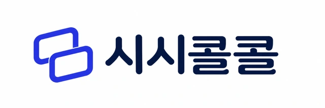

Alex
차분하고 명료한 대화
AI가 먼저 인사해요. 짧게 답해도 괜찮아요.
첫 통화에는 마이크 허용이 필요해요.
Alex
연결 준비 중
00:00
연결 확인 중
응답이 없으면 말을 마친 뒤 답변 요청을 눌러 주세요.
통화 도움말
힌트를 누르면 다음에 말할 짧은 영어 문장을 제안해 줘요. 속도는 AI 음성에만 적용돼요.
대화문 보기 0개 발화
대화를 기다리고 있어요.
최근 통화
대화 기록
Alex와 이어가기
복습
학습 노트
Alex와의 대화

AI 친구와 편하게 이야기해 보세요.
대화와 기억은 다음에도 이어져요.
현재 초대받은 계정으로 이용할 수 있어요.
초대받은 계정으로 다시 로그인해 주세요.
로그인 정보를 확인하고 있어요.
로그인 확인 중
영어로 나누는 가벼운 일상.
차분하고 명료한 대화
AI가 먼저 인사해요. 짧게 답해도 괜찮아요.
첫 통화에는 마이크 허용이 필요해요.
연결 준비 중
00:00
연결 확인 중
응답이 없으면 말을 마친 뒤 답변 요청을 눌러 주세요.
힌트를 누르면 다음에 말할 짧은 영어 문장을 제안해 줘요. 속도는 AI 음성에만 적용돼요.
대화를 기다리고 있어요.
Alex와 이어가기
Alex와의 대화